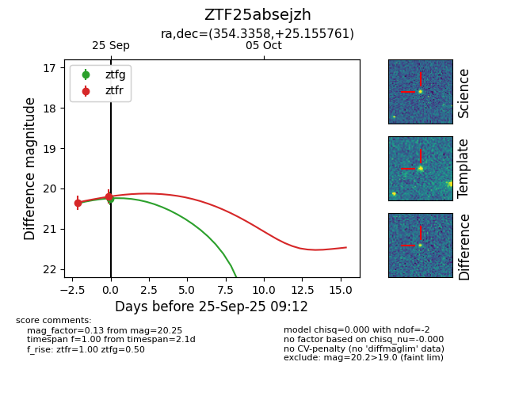
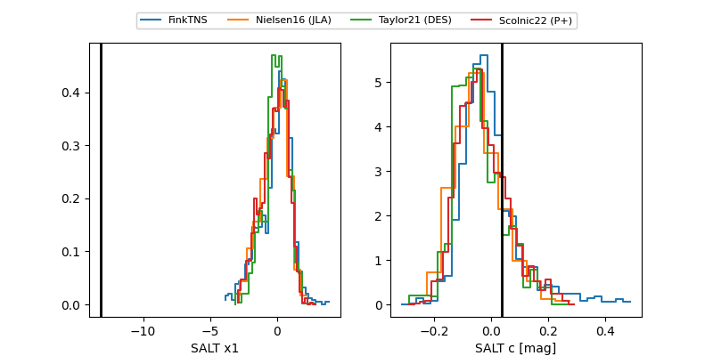

FINK: ZTF25absejzh
Lasair: ZTF25absejzh
ALeRCE: ZTF25absejzh
ZTF25absejzh (ztf,fink)
equatorial (ra, dec) = (354.3358,+25.15576)
galactic (l, b) = (102.4451,-34.75110)


last ztfg=20.25, ztfr=20.20
1 ztfg, 2 ztfr detections